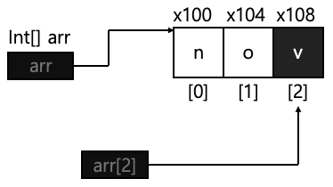
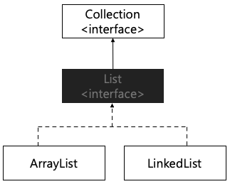
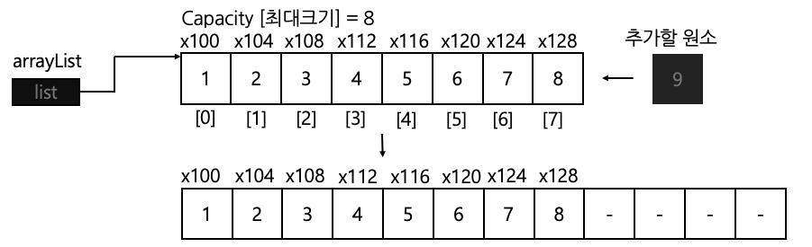
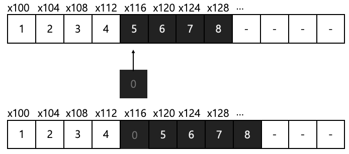
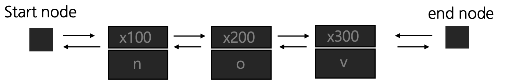
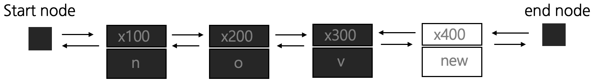

✨수정사항
- List Interface 제공 기능 파트 추가 2024.08.08
#1 Array
배열은 자료구조를 처음 공부할때 배우는 가장 기본적인 자료구조이다. About Array
배열은 내부 원소가 연속된 메모리 공간에 저장되어 있다.
따라서 원소가 저장된 위치만 알고 있다면 즉시 원소에 접근할 수 있다는 장점을 가진 강력한 자료구조다.

String[] arr = {"n", "o", "v"};
System.out.println(arr[2]);
하지만 일반 배열은 크기가 고정되어 있다는 한계를 가진다.
이처럼 크기가 고정되어 있는 배열의 특징을 정적 할당 (static allocation) 이라고 한다.
#2 List
크기가 고정되어 있다는 배열의 한계를 극복하기 위해 List 라는 자료구조가 탄생 하였다.
리스트의 특징은 다음과 같다.
1. 데이터의 순서가 존재한다.
2. 데이터의 중복을 허용한다.
3. 리스트의 크기는 필요에 따라 동적으로 변한다.
Java는 Collection framework에서 다양한 형태의 최적화된 자료구조를 제공한다.
그 중 리스트는 Collection framework에서 제공하는 가장 대표적인 자료구조로, 리스트의 내부 구조에 따라 2가지 형태 (ArrayList, LinkedList) 의 리스트를 제공한다.

#2.1 ArrayList
ArrayList는 배열을 사용하여 데이터를 관리하는 리스트이다.
리스트 내부에 원소가 가득차면 대략 리스트의 크기를 50% 정도 늘려가는 방식으로 동작한다.
따라서 구현 방식은 배열과 동일하기에 크기가 동적으로 늘어난다는 점을 제외하곤 동일한 방식으로 동작된다.
그렇기에 배열과 마찬가지로 특정 원소가 저장된 위치를 알고 있다면 1번의 연산 만으로 데이터에 접근 가능하다는 강력한 이점을 가진다.

import java.util.ArrayList;
import java.util.List;
public class test {
public static void main(String[] args) {
List<Integer> arrayList = new ArrayList<>();
for (int i = 0; i < 8; i++) {
arrayList.add(i + 1);
}
System.out.println("ArrayList 내부 원소 출력");
for (Integer integer : arrayList) {
System.out.print(integer + " ");
}
}
}ArrayList 내부 원소 출력
1 2 3 4 5 6 7 8
#배열 리스트의 원소 삽입
배열 리스트는 중간에 원소를 삽입하는 경우, 삽입하고자 하는 인덱스로 부터 뒤에 위치한 모든 원소를 한 칸씩 뒤로 미루는 방식으로 연산을 수행하기에 O(N) 만큼의 시간 복잡도가 소요된다.
내부에 저장된 원소가 많을수록 더욱 많은 원소를 이동시키는 연산이 발생하기에, 중간 위치에 원소를 삽입할 경우 비교적 비효율적으로 동작한다는 단점을 가지고 있다.

import java.util.ArrayList;
import java.util.List;
public class test {
public static void main(String[] args) {
List<Integer> arrayList = new ArrayList<>();
for (int i = 0; i < 8; i++) {
arrayList.add(i + 1);
}
// 배열리스트 중간에 원소 추가
// O(N) 만틈의 시간 복잡도가 소요
arrayList.add(4, 0);
System.out.println("ArrayList 내부 원소 출력");
for (Integer integer : arrayList) {
System.out.print(integer + " ");
}
}
}ArrayList 내부 원소 출력
1 2 3 4 0 5 6 7 8
#2.2 Linked List
연결 리스트는 노드 (객체) 들의 집합으로 구성된 리스트이다.
각 노드는 원소와 다음 노드를 참조하는 참조값으로 구성되어있다.
public class Node {
Object item;
Node next;
public Node(Object item) {
this.item = item;
}
}
#연결 리스트의 원소 접근
연결 리스트의 구조에 따라 순차 연결 리스트, 원형 연결 리스트 등 다양한 종류의 리스트로 구분한다.
자바는 그 중에서 각 노드가 앞 뒤 정보를 모두 가지고 있는 이중 연결 리스트 형태로 구성되어 있다.

배열 리스트와 달리 연결 리스트는 메모리의 연속된 공간에 배치되는 것이 아닌, 노드들의 연결로 이루어져 있기에 인덱싱을 통해 원소에 바로 접근하는 것은 불가능하다.
따라서 특정 원소에 접근하고 싶다면 시작 노드 혹은 마지막 노드부터 순차적으로 탐색을 진행해야 하기에 평균적으로 O(N) 만큼의 시간 복잡도가 소요된다.
이러한 특징으로 인해 원소 접근 측면에서는 배열 리스트 보다 상당히 비효율적인 자료구조이다.
#연결 리스트의 원소 추가
연결 리스트는 중간에 원소를 추가하는 경우에는 해당 원소까지 접근하는 과정이 필요하기에 O(N) 만큼의 시간 복잡도가 소요된다.
반면 자바에서 연결 리스트는 시작 노드와 마지막 노드의 정보를 모두 담고 있는 이중 연결 리스트 구조이기에, 맨 앞 혹은 맨 뒤에 원소를 추가하는 경우 O(1) 만에 원소를 추가할 수 있어 강력한 성능을 보인다.

#3 Array List Vs Linked List 성능 비교
| Array List | Linked List | |
| 원소 추가/삭제 (중간) | O(N) | O(N) |
| 원소 추가/삭제 (처음) | O(N) | O(1) |
| 원소 추가/삭제 (마지막) | O(1) | O(1) |
| 원소 접근 | O(1) | O(N) |
| 원소 탐색 | O(N) | O(N) |
배열 리스트는 특정 인덱스의 원소에 접근하는 데 좋은 성능을 보이며, 연결 리스트는 처음과 마지막에 원소를 삽입하는 경우 좋은 성능을 보인다.
따라서 앞과 뒤에 빈번한 원소 삽입 및 삭제가 일어나는 경우에는 연결 리스트를, 특정 인덱스의 원소에 자주 접근해야 하는 상황에서는 배열 리스트를 사용하는 것이 좋다.
#4 List Interface 제공 기능
#4.1 List.of() static method
List.of() 정적 메서드에 배열을 넣어주면 배열을 기반으로 불변 리스트를 생성할 수 있다.
예시로 특정 파라미터로 Collections 타입이 요구되는 경우에 배열을 리스트로 바꾸어 인자로 던져줄 때 사용하고는 한다.
다음은 inputArr 배열의 각 원소를 List.of 메서드를 사용해 정적 리스트로 변환한 뒤, HashSet의 파라미터로 활용한 예제이다.
Integer[] inputArr = {30, 20, 20, 10, 10};
Set<Integer> hashSet = new HashSet<>(List.of(inputArr));
System.out.println("hashSet = " + hashSet);hashSet = [20, 10, 30]
또한 배열을 넣어주는것이 아닌 List.of 메서드에 바로 인자를 대입하여 초기화 하는 것 또한 가능하다.
단, 유의해야 할 점은 앞에서도 말했듯이 List.of 메서드로 생성된 리스트는 불변이기에 리스트에 값을 추가하거나 삭제하는 연산을 시도할 시 에러가 발생한다.
List<Integer> immutableList = List.of(1, 2, 3, 4, 5);
System.out.println("immutableList = " + immutableList);
// immutableList.add(1);immutableList = [1, 2, 3, 4, 5]